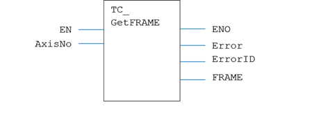
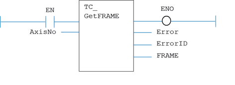

Motion Function
Fetches the currently active FRAME.
|
EN : BOOL; |
Set TRUE to enable the function |
|
AxisNo : USINT; |
Axis number |
|
ENO : BOOL; |
TRUE if function is enabled |
|
Error : BOOL; |
TRUE if a program error is detected |
|
ErrorID : UINT; |
Returned error number |
|
FRAME: DINT |
The active Frame |
When the EN input is TRUE, the function block applies the command to the axis indicated by AxisNo.
A programming error, such as parameter out of range, will set the Error output and return an error ID number. For the Error ID reference, see the Trio Programming error list.
MyTC_GetFrame(EN, AxisNo);
ENO := MyTC_GetFrame.ENO;
Error := MyTC_GetFrame.Error;
ErrorID := MyTC_GetFrame.ErrorID;
FRAME := MyTC_GetFrame.FRAME;

